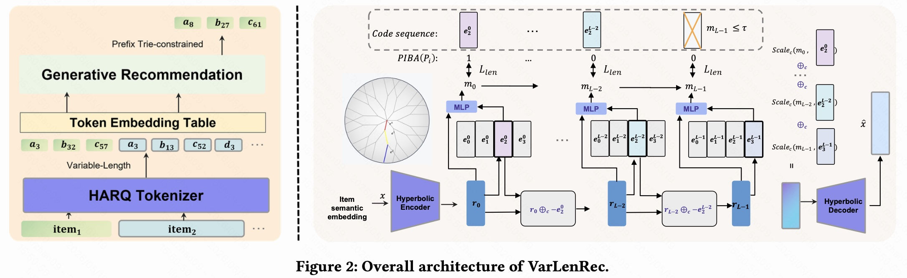
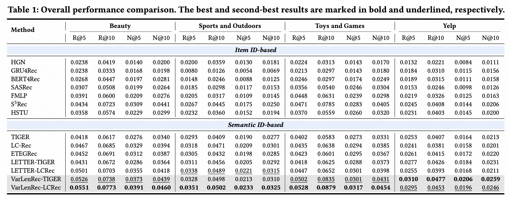
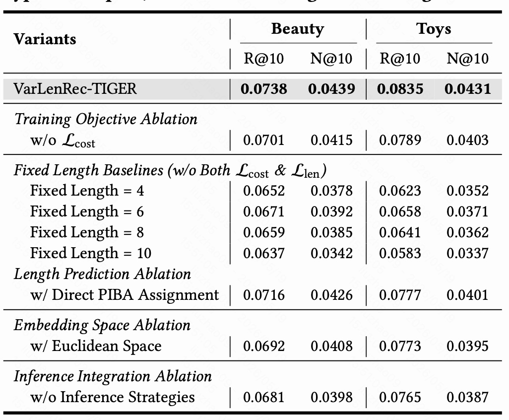
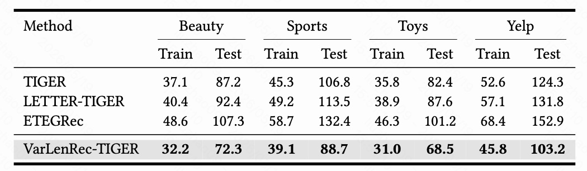

今天来精读华东师范大学这篇生成式推荐论文：《Learning Variable-Length Tokenization for Generative Recommendation》。这篇文章提出的核心问题非常直接：生成式推荐中的语义 ID 为什么一定要给所有物品固定长度？
论文地址：https://arxiv.org/pdf/2605.17779
1. 一句话概括
这篇论文的核心观点是：生成式推荐系统不应该给所有商品分配同样长度的语义 ID；热门商品用短 ID 就够了，长尾商品反而需要更长、更细的 ID。
作者提出 VarLenRec，让系统根据商品流行度和商品语义复杂度自动学习“这个商品应该保留几层 token”。可以把它理解成：以前所有商品都拿同样长度的“身份证”；这篇文章认为，热门商品用户行为多、协同信号足，身份证可以短一点；冷门商品交互少、容易被混淆，身份证应该写得更详细。
这篇文章真正重要的地方，不只是把 fixed-length 改成 variable-length，而是指出：语义 ID 的长度本质上是一种信息容量分配。 固定长度等价于假设所有物品需要相同的信息容量，但推荐系统中天然存在头部和长尾，二者的信息来源完全不同。
2. 背景：生成式推荐为什么需要语义 ID
传统推荐系统通常是“打分排序”：给用户和物品各自一个向量，然后计算用户对每个候选物品的偏好分数，最后排序。这个范式依赖召回、粗排、精排等多阶段链路，核心是匹配和排序。
生成式推荐换了一种思路：把推荐看成一个生成任务。 模型看到用户过去点击、购买或浏览过的物品序列，然后像语言模型预测下一个词一样，预测用户下一个可能交互的物品。论文中也明确说，生成式推荐把推荐问题重构为对离散语义标识符，也就是 semantic IDs，做 next-token prediction。
这里的“语义 ID”不是数据库里的随机商品编号。普通商品编号可能是 item_12345，这个编号本身没有语义；语义 ID 则是把商品文本、类别、协同关系等信息编码成一串离散 token，例如：
这串 token 理想情况下能表达物品的多层语义结构。第一层可能表示大类，比如“美妆”；第二层表示子类，比如“口红”；第三层表示更细属性，比如“哑光”；第四层表示更细粒度的商品差异。
现有生成式推荐方法，例如 TIGER、LC-Rec、ETEGRec、LETTER 等，大多使用这种语义 ID 机制。它们通常先用文本编码器或协同表示得到物品 embedding，再用 RQ-VAE 或类似量化方法把连续 embedding 离散化成多层 token，最后让 T5 或 Transformer 类模型生成目标物品 token。
但这些方法有一个共同假设：所有商品都用固定长度 ID。 比如每个商品都用长度为 4、6、8 或 10 的 token 序列。论文指出，这个设计其实隐含了一个很强的假设：所有商品都需要相同的编码容量。
这个假设在推荐系统中并不自然。推荐系统天然存在长尾分布：少数热门商品有大量交互记录，大量冷门商品交互非常稀疏。热门商品和冷门商品的信息来源不同：
- 热门商品被很多用户点击、购买、收藏，协同信号非常丰富，模型即使只用较短 ID 也能识别它。
- 长尾商品缺少交互数据，协同信号不可靠，模型更依赖内容、类别、文本描述等细粒度语义来区分它。
所以这篇文章的问题可以重新表述为：既然商品的信息需求不同，为什么语义 ID 的长度要相同？
3. 核心发现：Popularity-Length Paradox
这篇文章最重要的出发点是一个实验发现，作者称为 Popularity-Length Paradox，可以翻译成“流行度-长度悖论”。
作者把测试样本按照目标商品的流行度分成三组：
- Head Items：最热门的 20% 商品。
- Body Items：中间 60% 商品。
- Tail Items：最冷门的 20% 商品。
然后他们分别测试不同语义 ID 长度，例如 $L=4,6,8,10$，观察推荐效果 NDCG@10 的变化。

图 1 展示的现象非常清楚：
- Head Items：热门商品在短 ID 下效果最好，ID 变长后效果反而下降。
- Tail Items：冷门商品正好相反，ID 越长效果越好。
- Body Items：中间商品通常在中等长度附近更好。
- All Items：全局最优固定长度只是一个折中方案，并不是任何一个流行度分组的真正最优。
这就是论文所谓的 Popularity-Length Paradox：同一个 ID 长度对不同流行度商品的影响方向是相反的。
直观解释如下。
对于热门商品，例如爆款手机、热门品牌口红、热门餐厅，它们在训练集中出现频率高，用户行为模式丰富。即使语义 ID 很短，模型也能通过大量协同信号认出它们。ID 过长时，后面的 token 可能引入很多推荐无关的细节，反而增加噪声，并使生成模型更难稳定预测。
对于冷门商品，例如小众户外配件、冷门书籍、低频商家，它们的交互记录少，协同信号不足。如果 ID 太短，这些商品会被压缩到很粗的语义桶里，容易和大量相似商品混淆。它们需要更长的 token 序列来表达细粒度内容差异。
因此，这篇文章的核心判断是：ID 长度应该因商品而异，而不是作为一个全局超参数固定下来。
4. 方法总览：VarLenRec 做了什么
VarLenRec 的全称可以理解为 Variable-Length Recommendation，是一个用于生成式推荐的变长语义 ID 学习框架。它不是单独提出一个小技巧，而是把理论长度分配、几何空间量化、可微长度选择和下游生成约束串成了一套完整方案。

从图 2 可以看到，VarLenRec 包含四个关键部分：
PIBA：Popularity-Weighted Information Budget Allocation
从信息预算角度推导“商品越热门，最优 ID 越短；商品越冷门，最优 ID 越长”。PIBA 给出理论长度先验，不是简单拍脑袋设规则。
HARQ：Hyperbolic Adaptive Residual Quantization
在双曲空间中做自适应残差量化，让不同长度的 ID 更自然地表达不同粒度的商品语义。热门商品靠近双曲空间中心，长尾商品靠近边界，利用边界附近更大的表示容量。
Soft Length Controller
长度选择本身是离散决策，不可微。Soft Length Controller 用每一层的保留概率来近似“是否继续保留下一层 token”，从而让长度学习可以端到端训练。
下游生成式推荐集成
变长 ID 会带来新的生成问题，包括 ID 碰撞、幻觉生成和长度偏置。作者分别用辅助码本、Trie 约束解码和长度归一化/odds-ratio 重打分来处理。
这四个部分的关系是：PIBA 提供理论和监督信号，HARQ 提供适合层级语义的几何空间，Soft Length Controller 学习可微的长度选择，下游集成保证变长 ID 真的能被生成式推荐模型使用。
5. PIBA：从信息预算推导“热门短、冷门长”
PIBA 的全称是 Popularity-Weighted Information Budget Allocation，可以理解为“基于流行度加权的信息预算分配”。
它背后的思想其实很朴素：推荐系统要有效区分一个商品，需要足够的信息量。这个信息量可以来自两部分：
- 协同信息：用户交互行为提供的信息，商品越热门，协同信息越多。
- 语义 ID 信息：商品内容、类别、文本描述等通过 token 表达的信息。
作者假设每个商品都需要一个最低信息预算 $I_{req}$，才能被推荐系统有效区分。热门商品已经拥有大量协同信息，所以语义 ID 只需要补充少量信息；冷门商品缺少协同信息，所以语义 ID 需要承担更多信息。
5.1 协同信息：热门商品自带更多信息
论文将商品 $i$ 的流行度记为 $p_i$，也就是训练集中归一化后的交互频率。协同信息被建模为：
这里 $\alpha$ 表示协同信息随流行度增长的收益率，$\theta$ 是缩放参数。使用对数形式的原因是：协同信息有边际收益递减。一个商品从 1 次交互变成 10 次交互，信息增量很大；但从 100 万次变成 100 万零 10 次，新增信息就很有限。
所以热门商品拥有更高的 $I_{collab}$，它需要语义 ID 补充的信息缺口更小。
5.2 语义 ID 信息：长度越长，信息越多，但边际递减
残差量化是多层结构，越靠前的层表达越粗粒度的信息，越靠后的层表达越细粒度的残差。论文假设第 $l$ 层提供的信息大约是 $\gamma/l$，因此长度为 $L_i$ 的语义 ID 总信息量为：
这也符合直觉：第一层 token 信息量最大，后续层是在不断补充残差，越往后边际收益越小。
5.3 信息缺口与最优长度
如果一个商品需要总信息预算 $I_{req}$，协同信息已经提供了 $I_{collab}(p_i)$，那么语义 ID 需要填补的信息缺口就是：
要求语义 ID 至少填补这个缺口：
代入 $\gamma \ln L_i$ 后，可以得到最优长度与流行度之间的关系：
这就是论文的 Theorem 1。它表达的含义是：最优 ID 长度和商品流行度成负幂关系。 商品越热门，$p_i$ 越大，最优长度 $L_i^*$ 越短；商品越冷门，$p_i$ 越小，最优长度越长。
这个公式的意义不在于实际系统必须严格照公式计算，而在于给出了理论原则：长度分配不是经验规则，而是由协同信息与语义信息的互补关系决定。
5.4 实际如何把连续长度变成整数
实际系统中 ID 长度必须是整数，而且通常有最大长度 $K$。论文采用基于流行度排名的离散映射。
先按流行度从高到低排序，给每个商品一个排名 $r_i$，最热门商品 $r_i=0$，最冷门商品 $r_i=N-1$。然后定义冷度：
再用温度参数 $\beta$ 控制映射曲线：
这个映射保证了一个关键单调性：
也就是说，更热门的商品不会比更冷门的商品拿到更长的 ID。之后 PIBA 生成的离散长度会转成一个二值 mask，作为 Soft Length Controller 的监督目标：
如果 PIBA 认为某商品长度应该是 4，那么前 4 层 mask 为 1，后面层为 0。
6. HARQ：为什么要用双曲空间做残差量化
VarLenRec 的第二个关键组件是 HARQ：Hyperbolic Adaptive Residual Quantization，即双曲自适应残差量化。
先回顾普通残差量化。给定一个连续物品向量，残差量化不是一次性找一个离散码字，而是多层逐步逼近：
- 第一层先选择一个码字，表示最粗粒度语义。
- 计算第一层没有表示好的残差。
- 第二层继续量化残差，表示更细粒度信息。
- 后续层不断补充更细的残差。
这种方式非常适合构造多 token 语义 ID。比如一个商品可以被逐层表示成：
问题是，现有方法大多在欧氏空间中做残差量化。论文认为这不够适合推荐商品语义，因为商品语义天然是层级结构：大类下面有小类，小类下面有属性，属性下面有具体商品。这种结构像树，越往下分支越多。
6.1 欧氏空间的问题
欧氏空间的体积增长是多项式级别：
但是树形层级结构的叶子数量通常是指数增长。也就是说，如果商品语义像一棵树，那么越往细粒度层级走，需要的可区分区域会快速膨胀。欧氏空间的容量增长速度和这种结构并不匹配。
这会导致两个问题：
- 如果把大量细粒度长尾商品塞进欧氏空间，它们容易挤在一起，产生较大表示失真。
- 如果为了容纳长尾商品把空间拉得很大，热门商品的粗粒度聚集又会变得不够紧凑。
6.2 双曲空间的优势
双曲空间的关键性质是：越靠近边界，空间体积增长越快。 在 Poincare ball 模型中，体积随半径近似指数增长：
这非常适合表达层级结构。通俗地说，双曲空间像一个“中心紧凑、边界巨大”的空间：
- 靠近中心的区域容量较紧凑，适合放热门商品，因为热门商品只需要粗粒度区分。
- 靠近边界的区域容量迅速扩大，适合放长尾商品，因为冷门商品需要更细粒度、更分散的表示。
论文中说，HARQ 的编码器会学习把热门商品放在靠近原点的紧凑区域，把长尾商品分布到更靠近边界、容量更大的区域。这样就和 PIBA 的原则天然一致：热门商品短编码，长尾商品长编码。
6.3 HARQ 的编码流程
HARQ 的输入是物品语义 embedding $x_i$。首先通过一个 MLP 编码器得到欧氏向量：
然后通过指数映射投影到 Poincare ball：
接着进行 $K$ 层双曲残差量化。每一层维护一个双曲码本：
第 $l$ 层选择离当前残差最近的码字：
然后用 Mobius 加法计算双曲残差：
这和普通 RQ-VAE 的思想一致：每一层选择一个码字，再把已解释的部分从当前表示中扣掉。不同之处在于，所有计算都发生在双曲空间中，距离、加法、缩放都要使用双曲几何操作。
7. Soft Length Controller：让长度选择可以训练
ID 长度是离散变量。一个商品到底用 4 个 token 还是 7 个 token，本质上是硬决策；深度模型无法直接对这个选择做梯度下降。
为了解决这个问题，作者设计了 Soft Length Controller。
它不是直接输出“长度等于 5”，而是在每一层输出一个保留概率：
也就是说，第 $l$ 层是否保留，不只看商品流行度，而是看两类信息：
- 当前残差 $r_i^{(l-1)}$：前面层还有多少没解释完。
- 当前选中的码字 $e_{z_i^{(l)}}^{(l)}$：这一层能补充什么语义。
因此它能做内容自适应判断。如果前几层已经把商品表达清楚，就可以提前停止；如果残差还很大，就继续保留更深层 token。
7.1 为什么要用累计 mask
语义 ID 有一个前缀约束：如果保留第 5 层，就必须保留前 1 到 4 层。不能出现“跳过第 3 层但保留第 4 层”的情况。
因此作者定义累计 mask：
这个设计让越深层的保留概率自然受到前面所有层影响。只要前面某一层概率很低，后面层的累计 mask 就会被压下去。
训练时，$m_i^{(l)}$ 是连续值，可以反向传播；推理时使用阈值 $\tau=0.5$ 做离散化。比如：
- 第 1 层保留概率 0.99
- 第 2 层保留概率 0.95
- 第 3 层保留概率 0.82
- 第 4 层保留概率 0.61
- 第 5 层保留概率 0.30
如果阈值为 0.5，那么前 4 层保留，第 5 层停止，这个商品的 ID 长度就是 4。
7.2 Soft Controller 和 PIBA 的关系
PIBA 给出的是一个基于流行度的理论长度先验。它能够告诉模型：大体上热门商品应该短，冷门商品应该长。
但只用 PIBA 也有问题。两个商品流行度相同，并不代表语义复杂度相同。一个冷门商品可能属于非常明确的小类，短 ID 也够；另一个冷门商品可能语义模糊、属性复杂，需要更长 ID。
Soft Length Controller 的意义就在这里：PIBA 提供流行度先验，Controller 根据当前残差和码字内容做微调。 所以完整模型比“直接按照 PIBA 分配长度”更强。
8. 训练目标：表达能力和长度成本之间的权衡
VarLenRec 的 HARQ 训练目标由四部分组成：
8.1 重构损失
重构损失要求量化后的表示能还原原始物品特征：
它保证语义 ID 不是随便选出来的，而是真的保留了物品内容信息。
8.2 量化损失
量化损失让编码器输出和选中的码本向量对齐，类似 VQ-VAE / RQ-VAE 中的 commitment loss：
其中 $sg[\cdot]$ 是 stop-gradient。这个损失一方面更新码本，让码字靠近编码器输出；另一方面约束编码器，不要频繁跳动到离码本很远的位置。
8.3 长度成本
长度成本用于惩罚过长 ID：
如果没有这个项，模型很可能倾向于给所有商品都用更长 ID，因为长 ID 表达能力更强。但这会带来两个问题：训练和推理成本上升；后面层 token 可能引入噪声。
论文的消融实验也说明了这一点：去掉长度成本后，Beauty 数据集上的 Recall@10 下降了 5.0%。
8.4 长度对齐损失
长度对齐损失让模型预测的累计 mask 靠近 PIBA 给出的理论 mask：
这里 $t_i^{(l)}$ 是 PIBA 生成的二值目标。这个损失使模型不会完全脱离“热门短、冷门长”的理论约束。
整体来看，训练目标的平衡点是：不是越长越好，而是在语义表达能力、长度成本、理论先验之间找到合适的长度。
9. 下游生成阶段：变长 ID 带来的三个新问题
变长 ID 在 tokenization 层面很合理，但接入生成式推荐模型时会引入新问题。作者没有只停留在 tokenizer，而是把下游生成中的工程问题也处理了。
9.1 问题一：ID 碰撞
ID 碰撞指两个不同商品被编码成同一串 token。
固定长度场景下，通常可以追加一个区分 token 解决。例如两个商品都是 [3,7,5,2]，就追加一个额外 token 变成 [3,7,5,2,0] 和 [3,7,5,2,1]。
但变长场景下这样做会出问题。假设一个短 ID 是 [3,7]，追加主码本 token 5 后变成 [3,7,5]，它可能正好和另一个天然长度为 3 的商品 ID 冲突。而且追加的 token 会被模型误认为是正常语义层 token，污染更深层码本的训练。
作者的解决办法是：保留一个和主码本不重叠的辅助码本，专门用于碰撞消解。
如果主码本 token 范围是 $\{1,...,M\}$，辅助码本就使用 $\{M+1,...,2M\}$。当两个商品都被编码为 [3,7]，就变成：
这样既保证全局唯一，又不会把消歧 token 和语义 token 混在一起。
9.2 问题二：幻觉生成
生成模型可能生成一串并不存在的商品 ID。例如模型输出 [8,12,4]，但这个 ID 没有对应任何真实商品。
为此，作者构建了一个前缀树 Trie。所有合法商品 ID 都插入 Trie 中，beam search 解码时每一步只能选择当前前缀下存在的合法子节点。这样最终生成出来的序列一定能映射到真实商品。
这点和很多生成式检索工作类似：不是让模型在完整 token vocab 上随意生成，而是在合法 ID 空间中做约束搜索。
9.3 问题三：长度偏置
这是变长 ID 中非常关键的问题。生成模型通常用 token 概率连乘或 log 概率求和来给序列打分：
短序列天然更占便宜，因为它累积的负 log 项更少。长度为 3 的 ID 比长度为 8 的 ID 少乘很多概率项，即使每一步概率都差不多，短 ID 的总分也更高。
这会导致模型系统性偏向短 ID，也就是偏向热门商品，正好破坏 VarLenRec 给长尾商品分配长 ID 的初衷。
作者采用 odds-ratio 风格的重打分：
其中 $P(\hat{z}|z_{S_u})$ 是生成模型给出的条件概率，$P(\hat{z})$ 是该 ID 前缀在语料中的边际频率。这个重打分有两个作用：
- 提升对当前用户条件下高概率 ID 的评分。
- 惩罚在全局语料中太常见的前缀，避免热门短前缀天然占优。
这使得长 ID 和短 ID 在最终排序时更公平。
10. 实验设置与整体结果
论文在四个数据集上做实验：
- Amazon Beauty
- Amazon Sports and Outdoors
- Amazon Toys and Games
- Yelp
按照 TIGER、LETTER 等工作，过滤掉交互少于 5 的用户和物品。数据划分采用 leave-one-out：每个用户最后一个交互作为测试集，倒数第二个作为验证集，其余作为训练集。
对比方法分三类：
- 传统序列推荐方法：HGN、GRU4Rec、BERT4Rec、SASRec、FMLP、S3Rec、HSTU。
- 固定长度语义 ID 的生成式推荐方法：TIGER、LC-Rec、ETEGRec。
- 增强型生成式推荐方法：LETTER-TIGER、LETTER-LCRec。
评价指标是 Recall@5、Recall@10、NDCG@5、NDCG@10，使用 full ranking protocol，不做负采样。

从表 1 可以看到：
- VarLenRec-TIGER 一致超过固定长度 TIGER。
- VarLenRec-LCRec 一致超过固定长度 LC-Rec。
- VarLenRec-LCRec 在 Beauty、Sports、Toys 三个数据集上表现最好。
- VarLenRec-TIGER 在 Yelp 上表现最好。
- 相比传统序列推荐方法，VarLenRec 系列也有明显优势。
这说明 VarLenRec 不是绑定某一个特定 backbone 的技巧。它可以增强不同生成式推荐框架，说明“变长语义 ID”是一个相对通用的改进方向。
论文摘要中提到，VarLenRec 在 NDCG@10 上最高带来 4.7% 的提升。更重要的是，它改善的不只是推荐精度，还包括 ID 碰撞率和推理效率。
11. 消融实验：每个组件是否真的有用
论文在 Beauty 和 Toys 上对 VarLenRec-TIGER 做了消融。

11.1 固定长度都不如自适应长度
表中固定长度 4、6、8、10 都低于完整 VarLenRec。以 Beauty 为例：
- 固定长度 4：R@10 = 0.0652，N@10 = 0.0378。
- 固定长度 6：R@10 = 0.0671，N@10 = 0.0392。
- 固定长度 8：R@10 = 0.0659，N@10 = 0.0385。
- 固定长度 10：R@10 = 0.0637，N@10 = 0.0342。
- VarLenRec-TIGER：R@10 = 0.0738，N@10 = 0.0439。
固定长度 6 通常是一个还可以的折中，但它仍然明显不如按物品自适应分配长度。
这验证了论文的核心假设：不同商品确实需要不同语义粒度。
11.2 去掉长度成本会变差
去掉 $\mathcal{L}_{cost}$ 后，Beauty 的 R@10 从 0.0738 降到 0.0701，Toys 的 R@10 从 0.0835 降到 0.0789。
这说明如果不惩罚长度，模型容易给商品分配过长 ID。过长 ID 不仅增加计算成本，还可能引入推荐无关的细节，影响生成稳定性。
11.3 只用 PIBA 直接分配长度也不够
“w/ Direct PIBA Assignment” 表示直接用 PIBA 的理论长度，不使用 Soft Length Controller 做内容自适应。结果虽然不错，但仍低于完整模型。
这说明流行度确实是重要先验，但不是唯一因素。商品语义复杂度、当前残差是否已经被解释，也会影响最优长度。因此需要 Soft Length Controller 来做二次调整。
11.4 把双曲空间换成欧氏空间会明显下降
“w/ Euclidean Space” 表示用欧氏空间替代双曲空间，相当于退回标准 RQ-VAE 风格。Beauty 的 R@10 从 0.0738 降到 0.0692，Toys 的 R@10 从 0.0835 降到 0.0773。
论文解释为：双曲空间的指数体积增长更适合表达商品层级语义，能让热门商品聚集在原点附近，同时让长尾商品分散到边界附近。欧氏空间没有这种自然的容量分层。
11.5 去掉推理集成策略也会变差
“w/o Inference Strategies” 同时去掉碰撞消解、Trie 约束解码和长度重打分。Beauty 的 R@10 降到 0.0681，Toys 的 R@10 降到 0.0765。
这说明变长 ID 不只是 tokenizer 问题。即使 tokenization 做得好，如果生成阶段不处理碰撞、幻觉和长度偏置，最终推荐效果也会受损。
12. 效率分析：为什么变长 ID 反而更快
变长 ID 看起来更复杂，但实验显示它反而提升了效率。

表 3 比较了每个 epoch 的训练和测试时间。VarLenRec-TIGER 在四个数据集上都比 TIGER、LETTER-TIGER、ETEGRec 更快。
论文报告，VarLenRec 相比 TIGER：
- 平均减少 15.8% 的训练时间。
- 平均减少 19.3% 的测试时间。
原因很直接：热门商品出现频率高，而 VarLenRec 给热门商品分配了更短 ID。训练和生成时，模型需要处理的 token 数减少了。尤其推理阶段，短 ID 可以更早遇到 EOS 或停止条件，避免不必要的解码步骤。
这点很有意义，因为生成式推荐的一个现实问题就是推理成本。如果所有物品都用很长 ID，生成模型需要逐 token 解码，beam search 成本会比较高。VarLenRec 等于把最多出现的热门物品变短，从而降低整体平均 token 负担。
13. 语义 ID 质量分析
论文除了看推荐效果，还分析了语义 ID 本身的质量，包括碰撞率、长度分布和不同流行度分组上的表现。
13.1 碰撞率降低
固定长度或普通语义 ID 方法容易出现碰撞，即多个商品共享同一串 token。论文报告，VarLenRec 将平均碰撞率从 12.7% 降到 3.2%。
这个结果说明变长机制不仅是为了效率，也提高了 ID 空间利用率。长尾商品可以获得更长、更细的 ID，因此不容易和其他商品挤在同一个短编码里。
13.2 不同数据集学到不同平均长度
论文报告不同数据集的平均 ID 长度大约在 5.31 到 7.05 之间：
- Toys 平均长度较短，为 5.31。
- Yelp 平均长度较长，为 7.05。
这也符合直觉。Toys 商品类别相对更标准化，语义结构可能更容易被较短 ID 捕获；Yelp 商家差异更复杂，涉及地点、服务类型、消费场景、用户偏好等多维信息，因此需要更长的语义 ID。
13.3 解决流行度-长度悖论
论文还分析了不同流行度分组上的效果。固定长度 TIGER 中，热门商品随着最大长度变长而下降，长尾商品随着长度变长而提升，二者方向冲突。
VarLenRec 通过自适应长度缓解这个冲突：在最大长度变大时，热门商品并不会被迫使用更长 ID；长尾商品则可以使用更长 ID。因此总体效果能更稳定地随最大长度扩展。
论文报告，在相关分析中，VarLenRec 同时带来：
- Head items：+41.3% 提升。
- Tail items：+6.8% 提升。
这个结果很关键，因为很多长尾优化方法会以牺牲头部效果为代价，而 VarLenRec 的目标是重新分配编码容量，让头部和长尾都受益。
14. 核心创新点总结
14.1 发现 Popularity-Length Paradox
以前的生成式推荐工作大多把语义 ID 长度当作一个固定超参数，例如统一设为 4、6、8 或 10。本文通过分流行度实验说明：不同商品群体对 ID 长度的需求是相反的。热门商品偏好短 ID，长尾商品偏好长 ID。因此，全局固定长度本质上是次优折中。
14.2 提出 PIBA 理论框架
PIBA 不是简单凭经验说“热门短、冷门长”，而是从信息预算角度建模：热门商品协同信息多，语义 ID 需要补充的信息少；冷门商品协同信息少，语义 ID 需要补充的信息多。最终推导出：
这个公式给变长 ID 提供了理论支撑。
14.3 用双曲空间承载变长残差量化
双曲空间的指数容量增长适合表达层级语义结构。热门商品可以聚集在紧凑中心区域，长尾商品可以利用边界附近更大的空间表达细粒度差异。这比普通欧氏 RQ-VAE 更适合“热门短、长尾长”的编码目标。
14.4 用 Soft Length Controller 实现可微长度学习
长度选择本来是离散不可微的。Soft Length Controller 把它转化成连续的层保留概率，并通过累计 mask 保证前缀约束。它结合当前残差和码字信息，不只是机械执行流行度规则，而是内容自适应地决定是否继续加 token。
14.5 完整处理变长 ID 的生成问题
变长 ID 会带来碰撞、幻觉和长度偏置。作者分别通过辅助码本、Trie 约束解码和 odds-ratio 重打分解决。这使 VarLenRec 不只是一个 tokenizer 模块，而是能真正接入生成式推荐系统。
15. 和 TIGER / ETEGRec / LETTER 的关系
这篇文章可以放在生成式推荐语义 ID 发展脉络中理解。
TIGER 是生成式推荐的经典开端之一，它证明可以用 RQ-VAE 将物品内容 embedding 离散化成语义 ID，再用 Transformer 生成目标物品。但 TIGER 的语义 ID 是固定长度，tokenizer 和 recommender 也基本是两阶段。
ETEGRec 关注的是端到端学习，把 item tokenizer 和 generative recommender 通过对齐机制联合优化，解决“tokenizer 学出来的 token 不一定适合推荐”的问题。
LETTER 关注的是 learnable item tokenization，通过引入协同信息、对齐机制等方式提升 token 质量。
VarLenRec 切入的是另一个维度：不管 tokenizer 是否端到端、是否引入协同对齐，现有方法基本都默认固定长度。它指出这个固定长度假设本身就不合理，并提出变长 tokenization 机制。论文实验中 VarLenRec 可以接到 TIGER 和 LC-Rec 上，也说明它更像一个“语义 ID 容量分配层”的通用增强模块。
因此这篇文章的贡献不是替代 TIGER、ETEGRec 或 LETTER，而是补上了一个以前被忽略的设计维度：ID 长度也应该学习。
16. 最通俗的类比
可以把商品语义 ID 理解成“商品标签”。
以前的方法像是规定：所有商品标签都必须写 10 个字。但现实中并不合理。
“iPhone”这种热门商品，写“苹果手机”可能已经足够让系统识别，因为它有大量用户行为数据支撑。写太多细节，比如颜色、容量、地区版本、配件组合，反而可能干扰推荐。
一个冷门户外小配件，如果只写“户外用品”，就会和大量商品混在一起。它需要更长标签，比如“户外-露营-炉具配件-便携-某种接口”，才能被区分出来。
VarLenRec 做的事情就是：让系统自动决定每个商品标签该写多长；熟悉的商品少写，陌生的商品多写。
17. 我的理解：这篇文章真正重要的地方
这篇文章的价值不只是提出一个更复杂的量化模型，而是指出生成式推荐中的一个基础设计问题：语义 ID 的长度本身就是信息容量。
固定长度 ID 相当于假设所有商品都需要同样的信息容量。但推荐系统里，商品的交互数据、语义复杂度、流行度差异非常大。热门商品依赖协同信号就能被识别，长尾商品却必须依赖内容语义来补足信息。给它们相同长度，本质上是不合理的资源分配。
我认为这篇文章有三个值得借鉴的点：
第一，它没有直接提出一个复杂模型，而是先通过分组实验发现一个基础悖论。这个实验很有说服力，因为它把“固定长度为什么不合理”讲清楚了。
第二，它把经验现象上升为信息预算模型。PIBA 的公式虽然有近似假设，但它提供了一个清晰解释：协同信息越多，语义 ID 需要补的信息越少；协同信息越少，语义 ID 需要补的信息越多。
第三，它没有只停在理论和 tokenizer，而是处理了变长 ID 在生成阶段真正会遇到的问题。如果没有辅助码本、Trie 约束和长度重打分，变长 ID 很可能在下游生成中反而变得不稳定。
当然，这篇文章也有可以继续思考的地方。PIBA 主要基于流行度分配长度，但真实系统中影响 ID 长度的因素可能不止流行度。例如：
- 某些类别天然语义复杂，需要更长 ID。
- 某些商品虽然冷门，但内容非常清晰，短 ID 也可能足够。
- 商品流行度会随时间变化，长度分配需要周期更新。
- 多模态商品可能需要文本、图像、行为信号共同决定长度。
论文在未来工作中也提到，可以把变长 tokenization 扩展到多模态、跨域、类别特定或时间动态的分配策略。
总体来看，这篇文章的核心思想可以浓缩成一句话：
推荐系统不应该给所有商品同样长的“名字”；商品越热门，名字可以越短；商品越冷门，名字需要越细。